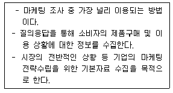
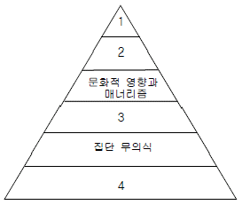
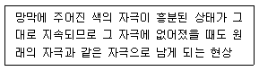
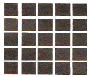
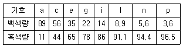
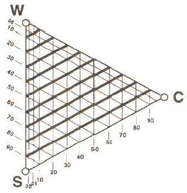

컬러리스트기사 (2016-05-08 기출문제)
1과목: 색채심리 마케팅
1. 색채 마케팅에 있어서 기업 C.I의 주조색을 선정하는 경우 고려해야 할 점은?
- 색에 의한 이미지 변화를 분석한 후 기업이 지향하는 비즈니스 방향과 목적에 부합되는지를 분석하여야 한다.
- 기업의 색은 제품의 이미지에 영향을 미치므로 서로 연상이 되지 않도록 차별화를 두어야 한다.
- 기업의 차별화를 위해서 기존에 사용되었던 색은 고려하지 않으며 색채재현이 특별한 색을 선정한다.
- 기업 이미지 색채는 다양할수록 이미지 만들기가 용이하므로 여러 가지 메인컬러를 선택해야 한다.
(정답률: 86%)

2. 다음 중 제품정보로서 색과 관련된 색채연상효과에 관한 설명으로 거리가 먼 것은?
- 가전제품의 경우 전원과 메뉴 선택 버튼을 시각적으로 쉽게 인지되고 사용이 편리하게 색채를 적용한다.
- 시원한 청량음료 용기에는 청색, 녹색과 흰색의 조합에 의한 배색을 주로 사용한다.
- 소방기구에 적용되는 빨강은 구급장비, 상비약 등에도 사용된다.
- 흰색은 어떤 색과 짝지어도 조화가 되는 기본색으로 안전표지애서 통행로, 정돈을 나타낸다.
(정답률: 52%)
3. 환경색채에 대한 설명으로 옳은 것은?
- 지역의 자연환경과 인문환경에 영향을 준다.
- 인공환경에 가장 많은 영향을 받는다.
- 자연기후나 자연지형에 영향을 많이 받는다.
- 자연환경인 기후와 일광에 영향을 준다.
(정답률: 69%)
4. '다이나믹' 이미지의 제품개발에 가장 적합한 배색은?
- 핑크, 화이트, 스카이 블루의 배색
- 블루, 레드, 블랙의 배색
- 그레이, 화이트, 베이지의 배색
- 블랙, 그레이, 베이지의 배색
(정답률: 84%)
5. 색채 마케팅 전략에서 소비자의 활동 · 관심 · 의견 등을 인구통계학적 차원을 기초로 분석하여 유형별로 구분하는 방법은?
- 소비자 구매행동 분석
- 라이프 스타일 분석
- 색채 이미지 분석
- 소비자 선호도 조사
(정답률: 57%)
6. 색채 마케팅에서 중요하게 고려되어야 할 점을 포함하는 마케팅의 개념은?
- 마케팅은 고객의 요구를 이해하고 적절한 제품을 시장에 내보냄으로써 기업의 소득증대를 일으키기 위한 총체적인 기업 활동을 말한다.
- 마케팅은 제품을 생산한 후 소비자에게 판매하기에 필요한 유통정책을 원활히 수행하는 것이다.
- 마케팅은 인간의 무한한 욕구를 충족시키기 위해 여러 가지 자원을 활용하여 경제활동을 하는 과정이다.
- 마케팅은 고객의 필요와 요구에 따라 고객에게 봉사하기 위한 고객만족 서비스를 말한다.
(정답률: 80%)
7. 1981년 W.퀼러의 실험을 통해 일반인이 색채 자극이 없게 회색으로 필해진 방과 화려하고 다양하게 채색된 방을 체험하게 했을 때 나타난 현상 중 옳은 것은?
- 여성이 남성에 비해 회색방에서 더 지루함을 느낀다.
- 한색계열이 적용된 방에서 심장박동이 감소하고 차분해진다.
- 단조로운 색채의 통일성은 심리적으로 과다한 자극을 준다.
- 남성과 여성의 색에 대한 스트레스 반응은 동일한 수준이다.
(정답률: 76%)
8. 소비자의 신제품 수용과정이 올바르게 배열된 것은?
- 관심 → 인지 → 시용 → 평가 → 수용
- 인지 → 관심 → 평가 → 시용 → 수용
- 관심 → 평가 → 시용 → 인지 → 수용
- 인지 → 관심 → 수용 → 평가 → 시용
(정답률: 60%)
9. 기업이미지 구축을 위해 특정색을 활용하는 마케팅 전략과 관련이 높은 것은?
- 색채표준
- 선호색
- 색채연상 · 상징
- 색채대비
(정답률: 77%)
10. 색채 시장조사 기법 중 보기에서 설명하는 것은?

- 서베이 조사
- 패널 조사
- 관찰 조사
- 방법론 조사
(정답률: 83%)
11. 주로 진정 효과를 주며 폭력적인 범죄자나 정신적 안정을 필요로 하는 사람들의 방 내부에 이용되는 색은?
- 흰색
- 노랑
- 갈색
- 파랑
(정답률: 75%)
12. 색채 마케팅의 기초가 되는 인간의 욕구 중 자존심, 인식, 지위 등과 관련이 있는 매슬로우의 욕구단계는?
- 생리적 욕구
- 안전 욕구
- 사회적 욕구
- 존경 욕구
(정답률: 61%)
13. 색채 마케팅 전략을 수립하기 위한 마케팅 믹스의 기본요소에 속하지 않는 것은?
- 제품(product)
- 위치(position)
- 판매촉진(promotion)
- 가격(price)
(정답률: 62%)
14. SWOT 분석 중 시장의 위협을 회피하기 위해 강점을 사용하는 전략은?
- SO 전략
- ST 전략
- WO 전략
- WT 전략
(정답률: 75%)
15. 인간은 선행경험에 따라 다른 감각과 교류되는 색채감각을 경험하게 된다. 이에 대한 설명 중 틀린 것은?
- 뉴턴은 분광실험을 통해 발견한 7개 영역의 색과 7음계를 연결시켰는데, 이 중 C음은 청색을 나타낸다.
- 색채와 모양의 추상적 관련성은 요하네스 이텐, 파버비렌, 칸딘스크, 베버와 페흐너에 의해 연구되었다.
- '브로드웨이 부기우기'라는 작품은 시각과 청각의 공감각을 활용하여, 색채 언어의 가능성을 보여주었다.
- 20대 여성을 겨냥한 핑크색 MP3의 시각적 촉감은 부드러움이 연상되며, 이와 같이 색채와 관련된 공감각을 활용하면 메시지와 의미를 보다 정확하게 전달할 수 있다.
(정답률: 54%)
16. 프랭크 H. 만케의 6단계 색경험 피라미드에서 각 단계에 해당하는 내용의 연결이 틀린 것은?

- 1 : 개인적 관계
- 2 : 시대사조, 패션, 스타일의 영향
- 3 : 의식적 상징화-연상
- 4 : 색자극에 대한 심리학적 반응
(정답률: 66%)
17. 색채정보를 수집하기 위한 충화 표본 추출에 대한 설명이 아닌 것은?
- 모집단을 모두 포괄하는 목록이 있어야 한다.
- 조사 분석을 위한 하위집단을 분류한다.
- 하위 집단별로 비례 표본을 선정한다.
- 조사결과에 영향을 미치는 변수를 기준으로 하위 모집단을 구분한다.
(정답률: 48%)
18. 색채이미지를 조사하기 위해 사용하는 SD법(Semantic Differential Method)의 설명으로 틀린 것은?
- 측정하려는 개념의 관계있는 형용사 반대어 쌍들로 척도를 구성한다.
- 척도의 단계가 적으면 그 의미의 차이를 알기 어려우므로 8단계 이상의 세분화된 단계를 사용하는 것이 좋다.
- 직관적 응답을 구해야하므로 깊이 생각하거나 앞서 기입한 것을 나중에 고쳐 쓰는 것은 바람직하지 않다.
- 조사를 통해 얻어진 결과는 요인분석을 통해 그 대상의 의미공간을 효과적으로 해석할 수 있다.
(정답률: 15%)
19. 부드럽고 섬세하며, 여성적인 이미지와 어린이의 이미지를 표현하는 데 많이 사용되는 색채 계열은?
- 프라이머리 컬러
- 내추럴 컬러
- 네온 컬러
- 파스텔 컬러
(정답률: 86%)
20. 색채마케팅에서 시장세분화 전략으로 이용되며 인구통계적 특성, 라이프 스타일, 특정 조건 등을 만족하는 집단을 대상으로 하는 마케팅은?
- 대중마케팅
- 표적마케팅
- 포지셔닝마케팅
- 확대마케팅
(정답률: 70%)
2과목: 색채디자인
21. 시각전달디자인 (Visual Communication Design)분야가 아닌 것은?
- 편집디자인, 그래픽디자인
- 공예디자인, 의상디자인
- 일러스트레이션, 캐릭터디자인
- 패키지디자인, 타이포그래피
(정답률: 77%)
22. 다음 중 디자인의 조형 요소가 아닌 것은?
- 구성
- 색
- 재질감
- 형
(정답률: 69%)
23. 타이포그래피(typography)를 가장 잘 설명한 것은?
- 그림형태로 이루어진 글자의 조형적 표현
- 광고에 나오는 그림의 조형적 표현
- 글자에 의한 모든 커뮤니케이션의 조형적 표현
- 상징에 의한 커뮤니케이션의 조형적 표현
(정답률: 72%)
24. 실내디자인 색채계획 시 거리가 먼 것은?
- 주조색, 보조색, 강조색으로 나뉜다.
- 색채의 면적 비례가 중요하다.
- 배색에 있어 재질감이 영향을 끼친다.
- 바닥과 천장은 항상 강한 대비를 준다.
(정답률: 87%)
25. 환경디자인을 실행함에 있어서 유의할 점과 거리가 먼 것은?
- 사회성, 공통성, 공익성 함유 여부
- 환경색으로 배경적인 역할의 고려
- 사용조건에 적합성
- 재료의 자연색 배제
(정답률: 78%)
26. 직물의 색채계획 시 고려해야 할 요소 중 거리가 먼 것은?
- 성별, 연령 등에 따른 기호
- 계절, 재질 등에 따른 용도
- 빠르게 변화되는 유행 성향
- 파손 방지 등을 위한 제품 보호
(정답률: 81%)
27. 건축물의 경관색채 계획 시 고려사항으로 거리가 먼 것은?
- 사회성, 동일성, 공익성의 함유
- 공간과의 조화를 고려한 환경색
- 부분만을 강조한 독립적 색채계획
- 재료가 가지고 있는 자연색 존중
(정답률: 57%)
28. 19세기 말에서 20세기 초에 일어났던 양식운동으로서 자연물의 유기적 형태를 빌려 건축의 외관이나 가구, 조명, 실내 장식, 회화, 포스터 등을 장식할 때 사용되었던 양식은?
- 아르누보(Art Nouveau)
- 미술공예운동(Art and Craft Movement)
- 데 스틸(De stijl)
- 모더니즘(Modernism)
(정답률: 63%)
29. CI(Corporate Identity)의 구성 요소가 아닌 것은?
- 심벌마크(symbol mark)
- 로고타입(logotype)
- 전용 컬러(corporate)
- 저작권(copyright)
(정답률: 73%)
30. 제품의 색채 계획 중 기획단계에서 해야 할 것이 아닌것은?
- 주조색, 보조색 결정
- 시장과 소비자 조사
- 색채 정보 분석
- 제품기획
(정답률: 50%)
31. 제품디자인에 있어서 그 제품의 외관을 이해할 수 있도록 그림 완성 예상도는?
- 렌더링
- 러프스케치
- 일러스트레이션
- 레이아웃
(정답률: 66%)
32. 그리스인들이 신전과 예술품에서 아름다움과 시각적 질서를 얻기 위한 수단으로 사용한 비례법으로 조직적 구조를 말하는 체계는?
- 조화
- 황금분할
- 산술적 비례
- 기하학적 비례
(정답률: 78%)
33. 바우하우스의 색채교육 프로그램을 주도한 사람은?
- 헤르만 그레츠
- 요하네스 이텐
- 피터 베렌스
- 오토 에크만
(정답률: 70%)
34. 디자인 원리 중 율동(rhythm)과 관련된 조형 방법과 관련이 먼 것은?
- 매칭
- 점이
- 점증
- 반복
(정답률: 74%)
35. 굿 디자인(good design)과 거리가 먼 것은?
- 매년 굿 디자인을 선정하여 GD마크를 부여한다.
- 국가마다 굿 디자인의 기준들을 갖고 있다.
- 굿 디자인 요건으로 기능성, 심미성, 경제성, 독창성 등이 있다.
- 선정대상품목을 제품, 융합 콘텐츠 부분으로 제한한다.
(정답률: 77%)
36. 디자인 사조와 관련 내용의 연결이 틀린 것은?
- 구성주의 - 말레비치 - 기계적, 기하학적 형태를 중시하고 역학적인 미를 창조
- 신조형주의 - 몬드리안 - 개성을 배제하는 주지주의적 추상미술운동
- 추상표현주의 - 피카소 - 작자의 마음 상태, 감정, 상상, 꿈 등의 표현에 중점을 둠
- 미래주의 - 보치오니 - 속도와 움직임에 대한 표현을 중요시함
(정답률: 29%)
37. 디자인의 조건 중 합목적성에 대한 설명으로 가장 거리가 먼 것은?
- 합리주의에서는 궁극적 가치이다.
- 허용된 경비로 가장 우수한 디자인과 목적에 맞는 효과를 창출한다.
- 목적에 도달하는 데 적합한 대상이나 행위의 설정이다.
- 지적인 문제의 일종으로 객관적, 합리적으로 얻어지는 것이다.
(정답률: 47%)
38. 색채계획의 목적 중 거리가 먼 것은?
- 지루함을 피하기 위해 분위기를 바꾼다.
- 환경을 쾌적하게 하기 위해 친환경적 배색을 실시한다.
- 안전색의 사용으로 사고를 줄인다.
- 기능성, 문화성, 심미성, 등의 색채사용이 복잡해지므로 디자이너의 주관적 감성이 필요하다.
(정답률: 79%)
39. 근대 디자인의 역사에 대한 설명 중 틀린 것은?
- 독일공작연맹은 규격화를 통해 생산량 증대를 긍정하면서 동시에 질 향상을 지향하였다.
- 미술공예운동은 수공예 부흥운동, 대량생산 시스템의 거부라는 시대 역행적 성격이 강하다.
- 곡선적 아르누보는 오스트리아 빈을 중심으로 발전하였다.
- 아르데코는 복고적 장식과 단순한 현대적 양식을 결합하여 대중화를 시도하였다.
(정답률: 50%)
40. 저속한 모방 예술이라는 뜻의 독일어에서 유래한 디자인은?
- 하이테크
- 키치디자인
- 생활미술운동
- 포스트모더니즘
(정답률: 82%)
3과목: 색채관리
41. 다음 중 염료와 안료를 구분하는 일반적인 기준으로 가장 적합하지 않은 것은?
- 일반적으로 염료는 수용성, 안료는 비수용성이다.
- 염료는 수지(resin) 내부로 용해되어 투명한 혼합물이되고, 안료는 수지에 용해되지 않고 빛을 산란시킨다.
- 안료는 고착제(binder)가 필요하고, 염료는 고착제가 필요 없다.
- 염료와 안료 모두 별도의 접착제가 없어도 친화력이 있다.
(정답률: 72%)
42. 3자극치 직독식 광원색채계를 이용하는 방법으로 잘못된 것은?
- 측정에 사용하는 직독식 색채계는 루터(Luther)조건을 되도록 만족시켜야 한다.
- 직독식 색채계를 이용한 측정은 측정의 기하학적인 조건에 따라 분광감응도를 달리한다.
- 표준광원과 간접적으로 비교가 이뤄질 경우 해당기기의 장기안정도를 고려하여 적절한 교정주기로 관리되어야 한다.
- 직독식 색채계를 이용하여 계기의 지시로부터 3자극치 X, Y, Z 혹은 이들의 상대치를 구하고, 이로부터 색도좌표 x, y를 구한다.
(정답률: 35%)
43. PPI에 대한 설명으로 잘못된 것은?
- WQHD 급 스마트폰의 경우 400~500수준의 PPI를 가진다.
- 21.5인치 FHD 디스플레이의 경우 약 102 PPI 수준이다.
- 모니터 디스플레이에서 PPI는 스크린의 크기와 관계가 있다.
- PPI 픽셀의 비트 심도와 관계가 있다.
(정답률: 30%)
44. 표면색의 시감 비교 방법에 대한 설명으로 틀린 것은?
- 인쇄물, 사진 등의 표면색을 비교하는 경우, 상대 분광 분포에 근사한 상용 광원 D65를 사용한다.
- 관찰자는 무채색계열의 의복을 착용해야 하며, 관찰자의 시야 내에는 시험할 시료의 색 외에 진한 표면색이 있어서는 안 된다.
- 부스의 내부는 명도 L*가 약 45~55의 무광택의 무채색으로 한다.
- 비교하는 색면의 크기와 관찰거리는 시야각으로 약 2도 또는 10도가 되도록 한다.
(정답률: 52%)
45. 염료의 종류와 그 특징에 대한 설명으로 틀린 것은?
- 형광염료 - 종이나 흰 천 등을 더욱 희게 보이게 하기 위해 사용한다. 스틸벤계, 옥사졸계, 쿠말린계 등의 종류가 있다.
- 염기성염료 - 염료가 수용액 속에서 양이온으로 되어 있기 때문에 카티온 염료라고도 하며 색깔이 선명하고 물에 잘 용해되어 착색력이 좋다.
- 안료수지염료 - 나프톨 유도체가 커플링 성분으로 많이 사용되며 양자가 반응하여 염색되도록 한다.
- 산성염료 - 양모, 견, 나인론 등 아미드 계 섬유를 염색하는 것으로 이온결합방법으로 염색된다.
(정답률: 40%)
46. 천연 진주 또는 진주층과 닮은 외관을 부여하기 위해 사용하는 진주광택 색료에 대한 설명 중 틀린 것은?
- 진주광택 색료는 투명한 얇은 판의 위와 아래 표면에서의 광선의 간섭에 의하여 색을 드러낸다.
- 물고기의 비늘은 진주광택 색료와 유사한 유기화합물 간섭 안료의 예이다.
- 진주광택 색료는 굴절률이 낮은 물질을 사용하여야 그 효과를 크게 할 수 있다.
- 진주광택 색료는 조명의 기하조건에 따라 색이 변한다.
(정답률: 35%)
47. 어떤 색채가 매체, 주변색, 조도의 조건변화 등에 따라 다르게 보여지는 색의 속성을 정확히 예측해 주어 문제점을 해결할 수 있도록 개발된 색채이론(model)은?
- 디바이스 특성화(Device Characterization)
- 아이소머리즘(Isomerism)
- 컬러어피어런스(Color Apperance)
- 컬러디퍼런스(Color Difference)
(정답률: 52%)
48. LCD 디스플레이의 백라이트에 관한 설명이 틀린것은?
- 냉음극관(CCEL) 방식은 광색역을 재현하지 못한다.
- 백색 LED 방식은 상대적으로 좁은 색역을 재현한다.
- RGB LED 방식은 상대적으로 넓은 색역을 재현할 수 있다.
- 디스플레이의 재현 색역은 백라이트의 성능에 영향을 받는다.
(정답률: 50%)
49. KS A 0064(색에 관한 용어)에 따른 용어의 설명이 틀린 것은?
- 광원색 - 광원에서 나오는 빛의 색. 광원색은 보통 색자극값으로 표시한다.
- 색역 - 특정 조건에 따라 발색되는 모든 색을 포함하는 색도 그림 또는 색공간 내의 영역
- 연색성 - 색필터 또는 기타 흡수 매질의 중첩에 따라 다른 색이 생기는 것
- 색온도 - 완전복사체의 색도와 일치하는 시료복사의 색도표시로, 그 완전복사체의 절대온도로 표시한 것
(정답률: 64%)
50. 조명조건에 대한 등색도의 평가 방법에 대한 설명으로 틀린 것은?
- 조건등색도 : 기준광 밑에서 등색인 조건등색쌍이 시험광 밑에서 등색으로부터 벗어나는 정도
- 기준광 : 원칙적으로 KS C 0074에서 규정하는 표준광 D65
- 조건등색지수 : 조건 등색쌍의 조건 등색도를 표시하는 지수
- 3자극 값의 계산방법 : KS A 0066에 의해 원칙적으로 파장 간격 10nm로 계산한다.
(정답률: 37%)
51. 디지털 컬러 관리 시스템에 대한 설명이 틀린 것은?
- 하드웨어 장치의 컬러재현 특성을 기술하는 ICC 컬러 프로파일을 통해 장치 간 컬러 관리가 이루어진다.
- ICC에서는 sRGB를 기준 ICC 색공간 프로파일로 제안한다.
- ICC기준을 따르는 장치 프로파일은 운영체제나 애플리케이션에 관계없이 범용적으로 사용할 수 있다.
- ICC의 디지털 컬러 관리 기준은 ISO 15076-1:2010 국제 표준으로 정의 되어 있다.
(정답률: 23%)
52. 다음 중 CCM에 대한 설명 중 틀린 것은?
- 분광 반사율을 기준색에 일치시키기 위한 가장 효과적인 방식
- 소프트웨어를 통해 정확한 색료의 양 지정
- 발색에 소요되는 비용 산출로 경제적인 효과
- 아이소머리즘의 실현이 가능하므로 발색 공정에 대한 관리가 필요 없음
(정답률: 56%)
53. 프린터 프로파일링 시 유의해야 할 사항과 거리가 먼 것은?
- 프린터 드라이버에서의 올바른 매체 설정
- 잉크젯 인쇄물의 적정한 컬러 안정화 시간 확보
- 프린터 드라이버에서의 색상처리 기능 해제
- 잉크젯 프린터의 캘리브레이션
(정답률: 22%)
54. 감법 혼색에서 가장 넓은 색상영역을 구출할 수 있는 기본색은?
- 녹색, 빨강, 파랑
- 마젠타, 시안, 노랑
- 녹색, 시안, 노랑
- 마젠타, 파랑, 녹색
(정답률: 81%)
55. 컴퓨터 자동배색(CCM)은 색료의 분광특성을 바탕으로 색채처방을 산출하는 장비이다. 이 때 색료의 분광특성은 어떤 형태로 입력되는가?
- 단위 농도당 분광반사율의 변화
- 단위 농도당 색좌표의 변화
- 단위 농도당 흡수피크의 변화
- 단위 농도당 채도의 변화
(정답률: 73%)
56. 관측자에 따른 조건등색도의 평가방법에 관한 설명 중 틀린 것은?
- 조건 등색쌍의 관측자 조건 등색도는 관측자 조건 등색 지수에 의해 평가하고 필요에 따라 조건 등색 신뢰 타원 및(또는) 조건 등색 연력지수로 보충한다.
- 관측자 조 건 등색 지수, 조건 등색 신뢰 타원 및 조건 등색 연령지수의 계산에서 측색용광은 원칙적으로 KS C 0074에서 규정하는 표준광 D50을 사용한다.
- 기준 관측자 또는 연령별 평균 관측자가 조건등 색쌍을 완전한 등색이 아니라고 판단하는 경우에는 그 3자극값이 같도록 보정을 한 후, 각각의 지수를 구한다.
- 편차 기준 관측자는 관측자 조건 등색 지수를 부여하는 관측자를 의미한다.
(정답률: 53%)
57. 색채 측정 방법 중 필터식 색채계에 대한 설명으로 틀린 것은?
- 색채를 생산하는 현장에서 색채관리를 하는 데효율적이다.
- 기준이 되는 색채와의 비교 평가에 따른 품질관리가 용이하다.
- 조건등색이나 색료의 변화에 따른 근본적인 문제점에는 대응할 수 없는 한계점이 있다.
- 색채 처방을 산출하기 위한 자동배색에 사용될 수 있는 측정데이터를 직접 활용하는 데 주로 사용된다.
(정답률: 31%)
58. 다음 중 Gamma Correction에 대한 설명으로 틀린것은?
- CRT 모니터의 출력 휘도가 입력 RGB 값의 크기와 비례하지 않아서 발생한 색의 왜곡을 보정하기 위한 방법이다.
- 감마가 낮은 영상은 감마가 높은 영상에 비해 중간 톤의 상대적 밝기가 더 낮아 전체적으로 어둡게 보인다.
- 감마곡선은 입력신호가 0부터 255까지 증가할 때 최대 휘도를 1로 규격화하여 상대적인 휘도 변화를 나타낸다.
- 일반적인 컴퓨터 모니터의 디스플레이는 2~3의 감마를 나타내지만 1.8의 감마를 사용하는 경우도 있다.
(정답률: 36%)
59. 색 비교를 위한 작업면의 조도에 대한 설명으로 틀린것은?
- 자연주광을 이용하는 경우 적어도 2000 lx의 조도를 필요로 한다.
- 색 비교를 위한 작업면의 조도는 1000~4000 lx 사이로 한다.
- 어두운 색을 비교하는 경우 작업면의 조도는 2000 lx 이하가 적합하다.
- 균제도는 80% 이상이 적합하다.
(정답률: 58%)
60. 객관적인 색채 계측 시 측정값에 영향을 미치는 요소와 가장 거리가 먼 것은?
- 광원의 상대분광분포(Relative Spectral Intensity Distribution)
- 관측시야의 임계교조수(Critical Fusion Frequency)
- 시료의 분광확산반사율(Spectral Diffuse Reflectance)
- 관측자의 색채시감효율(Color Matching Functions)
(정답률: 49%)
4과목: 색채지각론
61. 헌트효과에 대한 설명으로 옳은 것은?
- 조명광이 밝아지면 컬러풀니스(colorfulness)가 증가하여 더 선명해 보이는 현상
- 같은 명소시 상태라도 빛의 강도(휘도)가 변화하면 색광의 색상이 다르게 보이는 현상
- 조명광이 밝아지면 밝기가 증가하여 그 색의 포화도가 저하되어 보이는 현상
- 자극이 강할수록 시감각의 반응도 크고 빨라지는 현상
(정답률: 12%)
62. 다음 보색에 관한 설명 중 가장 적합한 것은?
- 혼색했을 때 무채색이 되는 두 색을 말한다.
- 두 개의 원색을 혼색했을 때 나타내는 색을 말한다.
- 색상환에서 비교적 가까운 색간의 관계를 말한다.
- 혼색했을 때 원색이 되는 두 색을 말한다. 망막에 주어진 색의 자극이 흥분된 상태가 그대로 지속되므로 그 자극에 없어졌을 때도 원래의 자극과 같은 자극으로 남게 되는 현상
(정답률: 75%)
63. 푸르킨예 현상에 관련된 설명이 틀린 것은?
- 추상체의 시각은 단파장에 민감하다. 간상체의 시각은 장파장에 민감하다.
- 밝은 상태에서 어두운 상태로 바뀔 때 민감도가 증가하는 것을 암순응이라 한다.
- 암순응 되기 전에는 빨간 꽃이 잘 보이다가 암순응이 되면 파란 꽃이 더 잘 보이도록 시각기체가 바뀌는 현상이 발생한다.
- 조명 조건이 바뀌면서 눈의 수용기가 지닌 민감도가 변화하는 과정을 순응이라 한다.
(정답률: 69%)
64. 다음 중 여름 휴양지인 리조트의 청량감 있는 실내계획 시 가장 효과적인 타일 배합은?
- 마젠타 / 파랑
- 흰색 / 파랑
- 노랑 / 주황
- 연두 / 녹색
(정답률: 89%)
65. 색의 면적효과와 관련이 가장 먼 것은?
- 전시야 (全視野)
- 매스효과 (mass effect)
- 소면적 제3색각이상 (小面積 第三色覺異常)
- 동화효과 (assimilation effect)
(정답률: 50%)
66. 눈의 구조와 특징에 관한 설명이 틀린 것은?
- 간상체는 명암에 대해 민감하게 반응한다.
- 수정체는 색을 식별하는 시세포이다.
- 홍채는 빛의 양을 조절하는 카메라의 조리개와 같은 역할을 한다.
- 추상체는 망막의 중심와에 밀집되어 있다.
(정답률: 68%)
67. 다음 중 채도대비에 관한 설명으로 잘못된 것은?
- 채도가 다른 두 색을 인접시켰을 때 서로의 영향으로 채도가 높거나 낮아 보이는 현상이다.
- 순색은 채도가 높은 바탕보다는 채도가 낮은 바탕에서 더 선명해 보인다.
- 채도 대비는 인접한 두 색의 채도 차이가 클수록 뚜렷하게 나타난다.
- 채도대비는 유채색과 유채색간에 가장 뚜렷하게 느낄 수 있다.
(정답률: 69%)
68. 빛의 파장에 대한 설명으로 옳은 것은?
- 약 450~550nm의 파장은 파랑으로 보이게 된다.
- 여러 가지 파장의 빛이 고르게 섞여 있으면 검정색으로 지각된다.
- 약 380~450nm의 파장은 녹색으로 보이게 된다.
- 약 500~570nm의 파장은 노랑으로 보이게 된다.
(정답률: 46%)
69. 다음 중 베졸드 효과와 관련이 높은 혼색방법은?
- 회전혼색
- 감법혼색
- 연속혼색
- 병치혼색
(정답률: 50%)
70. 보기의 내용이 설명하는 것은?

- 동시대비 효과
- 양성 잔상
- 음성 잔상
- 병치혼색
(정답률: 67%)
71. 색채의 감정효과에 대한 설명이 틀린 것은?
- 색의 진출과 팽창을 실험하기에 가장 적합한 배경색은 회색이다.
- 원색의 빨강 의상을 좀 더 무겁게 느끼게 하고 싶다면 밝은 회색을 가미하여 명도를 높여준다.
- 파장이 짧은 색상이 파장이 긴 색상에 비하여 느리게 움직이는 것처럼 느껴진다.
- 장파장 계열의 색상은 시간의 흐름을 길게 느끼게 한다.
(정답률: 65%)
72. 혼색에 대한 설명으로 옳은 것은?
- 병치혼색의 경우 혼색의 명도는 최대 면적의 원색 명도와 일치한다.
- 컬러 인쇄의 경우 일부분을 확대하여 보면 점의 색은 빨강, 녹색, 파랑으로 되어 있다.
- 색필터를 겹치면 감법혼색이 나타난다.
- 중간혼색은 감법혼색의 영역에 속한다.
(정답률: 60%)
73. 눈에 서로 다른 색자극이 매우 빠르게 차례로 들어올 때 망막 상에서 자극이 혼합된 것으로 간주해 혼합색을 보게 되는 혼색방법은?
- 동시혼색
- 계시혼색
- 병치혼색
- 가법혼색
(정답률: 62%)
74. 색을 지각하는 요소들의 변화에 의해 지각되는 색도 변하게 된다. 다음 중 변화요인과 관련이 없는 것은?
- 광원의 종류
- 물체의 분광 반사율
- 사람의 시감도
- 물체의 물성
(정답률: 72%)
75. 색채의 지각과 감정과의 설명이 옳은 것은?
- 고명도일수록 무겁게, 저명도일수록 가볍게 보인다.
- 고채도일수록 강하게, 저채도일수록 약하게 보인다.
- 한색은 따뜻하게, 난색은 차갑게 느껴진다.
- 연한 톤은 딱딱하게, 짙은 톤은 부드럽게 느껴진다.
(정답률: 70%)
76. 혼색의 원리와 그 활용 사례가 옳게 연결된 것은?
- 물리적 혼색 - 점묘화법, 컬러사전
- 물리적 혼색 - 무대조명, 모자이크
- 생리적 혼색 - 점묘화법, 색팽이
- 생리적 혼색 - 무대조명, 컬러사진
(정답률: 56%)
77. 석양이 붉은 것과 관련한 빛의 성질은?
- 빛의 회절
- 빛의 산란
- 빛의 반사
- 빛의 굴절
(정답률: 80%)
78. 노란색 물체를 바라본 후 흰 벽을 보았을 때 남색 물체의 실루엣이 보이게 된다. 이러한 경우의 색채지각 현상을 방지하기 위한 예로 옳은 것은?
- 노란색의 방향 유도등
- 청록색의 의사 수술복
- 초록색의 비상계단 픽토그램
- 빨간색과 청록색의 체크무늬 셔츠
(정답률: 78%)
79. 그림의 흰 선이 교차하는 지점에 어두운 반점과 같은 것이 보이는 현상을 설명하는 것과 관련이 없는 것은?

- 연변대비
- 허먼 격자 착시
- 애브니 효과
- 명도대비
(정답률: 46%)
80. 다음 중 멀리서 보아도 눈에 잘 띄는 안내표지를 만들기 위한 배색으로 가장 좋은 경우는?
- 노랑 배경색에 흰색 글씨
- 검정 배경색에 노랑 글씨
- 흰 배경색에 빨강 글씨
- 흰 배경색에 검정 글씨
(정답률: 70%)
5과목: 색채체계론
81. 색채조화의 목적이 아닌 것은?
- 색채사이의 관계성 속에 질서를 부여하기 위해서
- 목적과 기능에 적합한 미적 효과를 얻기 위해서
- 질서 있는 환경을 구축하여 인간 삶을 풍요롭게하기 위해서
- 미에 대한 인간의 창조적 본능을 통제하기 위해서
(정답률: 82%)
82. 다음의 오스트발트 색체계의 표기방법 중 가장 명도가 낮은 것은? (기호와 혼합비의 표 참고)

- ca
- ge
- li
- pn
(정답률: 62%)
83. ISCC-NIST 색상의 약자를 잘못 표기한 것은?
- rO : reddish orange
- yG : yellowish green
- rP : pinkish red
- bG : bluish green
(정답률: 74%)
84. 스펙트럼의 삼자극치에 의해 색을 표시할 수 있는 색체계는?
- Munsell
- NCS
- CIE XYZ
- DIN
(정답률: 70%)
85. 세계 각국의 색채표준화 작업을 통해 제시된 색채체계와 그 특성을 옳게 연결한 것은?
- 혼색계 - CIE의 XYZ 색체계 - 색자극의 표시
- 현색계 - 오스트발트 색체계 - 관용색명 표시
- 혼색계 - 먼셀 색체계 - 색채교육
- 현색계 - NCS 색체계 - 조화색의 선택
(정답률: 68%)
86. 스웨덴의 하드와 시비크에 의해 개발된 국제표준으로 그 표기가 올바른 것은?
- S4020-Y30R
- 24:C
- Medium G 3020
- 2.5YR 4/10
(정답률: 66%)
87. NCS 색체계에 대한 설명이 옳은 것은?
- 흰색, 검정색, 노란색, 빨간색, 파란색, 녹색을 기본색으로 정하였다.
- 일본의 색채 교육용으로 넓게 채택하여 사용되고 있다.
- 1931년에 CIE에 의해 채택되었다.
- 각 색상마다 12톤으로 분류시켰다.
(정답률: 66%)
88. 다음 KS 관용색명 중 겨자색과 가장 가까운 먼셀 기호는?
- 10YR 6/7.5
- 5Y 7/10
- 6YR 2/3
- 5PB 5/10
(정답률: 55%)
89. 일본색채연구소가 발표한 색채 시스템으로 주로 패션 등에 사용되는 체계는?
- RAL
- P.C.C.S
- JIS
- DIN
(정답률: 58%)
90. 오스트발트 색체계의 설명으로 옳은 것은?
- 오스트발트는 스웨덴의 화학자이며 안료의 개발로 1909년 노벨상을 수상하였다.
- 물체 투과색의 표본을 체계화한 현색계의 컬러 시스템으로 1917년에 창안하여 발표한 20세기 전반의 대표적 시스템이다.
- 이 색체계는 회전 혼색기의 색채 분할면적의 비율을 변화시켜 색을 만들고 색표로 나타낸 것이다.
- 이상적인 백색(W)과 이상적인 흑색(B), 특정 파장의 빛만을 완전히 반사하는 이상적인 중간색을 회색(N)이라 가정하고 체계화 하였다.
(정답률: 41%)
91. 그림의 NCS 색상 삼각형에서 S-C축과 평행한 직선상에 놓인 색들이 의미하는 것은?

- 동일 하양색도
- 동일 검정색도
- 동일 명도
- 동일 뉘앙스
(정답률: 62%)
92. 먼셀 표기법에 따른 색상, 명도, 채도의 설명이 옳은 것은?
- 10R 3/6 : 탁한 적갈색, 명도 6, 채도 3
- 7.5YR 7/14 : 노란 주황, 명도 7, 채도 14
- 10GY 8/6 : 탁한 초록, 명도 8, 채도 6
- 2.5PB 9/2 : 남색, 명도 9, 채도 2
(정답률: 60%)
93. 먼셀의 색채조화원리에 대한 설명이 틀린 것은?
- 회색은 회색척도의 9단계에 준하여 정연하고 고른 간격일 때 가장 조화롭고, 중심점은 N5가 적절하다.
- 중간채도 5의 반대색끼리는 N5와 연속성이 있으며, 같은 넓이로 배합하면 조화롭다.
- 명도가 같고 채도가 다른 반대색끼리는 채도에 따라 면적을 달리한다. 예를 들면 Y3/10, PB3/2의 면적은 2:1로 하면 조화롭다.
- 명도와 채도가 모두 다른 반대색끼리는 회색척도에 준하여 정연한 간격으로 하면 조화롭다.
(정답률: 60%)
94. 국제조명위원회에서 개발된 색체계에 대한 설명이 틀린 것은?
- 1931년 감법혼색에 의해 CIE색체계를 만들었다.
- 물체색 뿐 아니라 빛의 색까지 표기할 수 있다.
- 광원의 관찰자에 대한 정보를 표준화하고, 색을 수치화 하였다.
- 물체색이 광원에 따라 달라지는 것을 보완한 것이다.
(정답률: 60%)
95. 단청에 적용하고 있는 한국의 색은?
- 지백색
- 담주색
- 석간주
- 유록색
(정답률: 30%)
96. 다음 중 청록색 계열의 전통색은?
- 훈색
- 치자색
- 양람색
- 육색
(정답률: 72%)
97. 먼셀의 명도, 채도단계에 관한 설명 중 옳은 것은?
- 명도단계가 11단계이며 중간명도는 5이다.
- 명도단계가 10단계이며 중간명도는 5이다.
- 명도단계가 11단계이며 채도단계는 13까지이다.
- 명도단계가 10단계이며 채도단계는 14까지이다.
(정답률: 50%)
98. 오스트발트 색채조화론의 등가색환에서 조화 중 색상간격이 6~8 떨어진 2색의 배색은?
- 반대색 조화
- 이색 조화
- 유사색 조화
- 보색 조화
(정답률: 24%)
99. 다음은 먼셀 색체계의 색표시 방법에 따라 표시한 유채색들이다. 이 중 명도가 같은 색으로 구성된 쌍은?
- 5Y 8/10, 10G 8/4
- 7.5RP 5/8, 7.5RP 4/4
- 5Y 7/6, 5PB 6/6
- 10G 8/4, 10G 6/4
(정답률: 79%)
100. CIE(국제조명위원회)에 의해 개발된 XYZ색표계에 관한 설명으로 틀린 것은?
- CIE에서는 색채를 X, Y, Z의 세 가지 자극치의 값으로 나타냈다.
- XYZ 삼자극치 값의 개념은 색시각 3원색 이론(3 Component Theory)을 기본으로 한다.
- XYZ 색표계는 측색에서 가장 기본적인 표색계로 3자극값 XYZ에서 다른 표색계로 수치계산에 의해 변환할 수 있다.
- X는 녹색의 자극치로 명도 값을 나타내고, Y는 빨간색의 자극치, Z는 파란색의 자극치를 나타낸다.
(정답률: 74%)